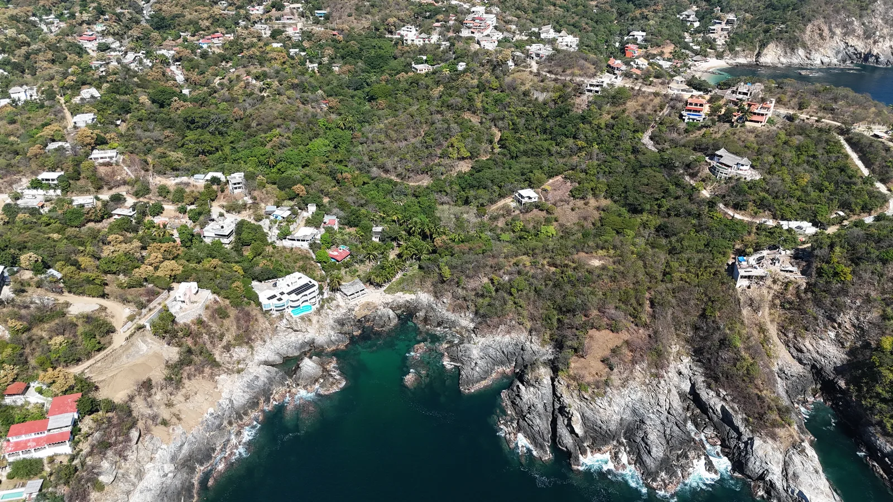

Mazunte, Puerto Ángel y La Boquilla conservan lo que otras costas ya vendieron: naturaleza, pueblos vivos y lotes con vista al mar disponibles.
Cada lote con sus metros y su precio, a la vista en la web. Puedes comparar antes de hablar con nadie.
Acompañamiento legal desde el primer documento y título de posesión en regla. Antes de firmar se explica cada papel.
Si construyes con Tierra, ves el avance en fotos y en qué se va cada peso, semana a semana, desde tu portal.
Azimut, Mazunte. El metro cuadrado más accesible, a pasos del pueblo y la playa.
Nabani, Puerto Ángel. Terrenos con vista al mar, Beach Club y playas caminando: para vivir o construir y rentar.
Aldea Tao, La Boquilla. Lotes sobre roca volcánica con acceso a calas salvajes. Proyecto limitado.
Depas Kora, Puerto Ángel. La forma más simple de invertir sin construir nada, con precio preferente por entrar temprano.
En un lote de Tierra o en tu propio terreno: diseño, permisos y obra con un solo equipo responsable.
| Desarrollo | Disponibles | Precio del lote | Por m² |
|---|---|---|---|
| Azimut Mazunte | 11 de 19 | $464,090 – $1,298,850 | $1,000 – $1,251 |
| Nabani Puerto Ángel | 23 de 34 | $502,222 – $1,751,111 | $1,889 – $2,389 |
| Aldea Tao La Boquilla | 25 de 32 | $550,000 – $3,494,286 | $1,100 – $1,760 |
Precios en pesos mexicanos, de contado. Esta tabla se calcula sola con el inventario de cada desarrollo: cuando se vende un lote, se actualiza.
¿Quieres comparar zonas a fondo? La guía de terrenos explica por qué el metro cuadrado cambia tanto entre la selva y la primera línea, y qué documentos pedir antes de firmar.
Conocemos tu perfil, tu presupuesto y tus tiempos, y te mostramos lo que encaja.
Presencial o virtual: caminas el lote, el acceso y la vista antes de decidir.
Firmas con acompañamiento legal desde el primer documento, sin letra chica.
Enganche y mensualidades hasta 24 meses, según el lote.
En regla y acompañado: tu patrimonio queda protegido.
Si quieres construir para vivir o rentar, Tierra lo hace llave en mano y tú lo sigues en tu portal.
Sí. Hay esquemas de enganche y mensualidades hasta 24 meses. Las condiciones exactas dependen del lote y las confirma un asesor.
Sí, pero la franja costera de México está dentro de la zona restringida, así que la forma de adquirir cambia (por ejemplo, mediante fideicomiso bancario o sociedad mexicana) y depende del régimen del predio. Se revisa caso por caso con el asesor legal antes de pagar cualquier anticipo.
Sí. Tierra construye llave en mano en sus lotes o en un terreno propio. El rendimiento de una renta depende de la propiedad, la temporada y la operación; no lo garantizamos, pero sí te damos la información para que hagas tus números.
Si construyes con Tierra, entras a tu proyecto con tu correo y contraseña: ves las fotos del avance semana a semana y el desglose de costos con el presupuesto restante.
El que acredita la propiedad o posesión y su historial, la constancia de que no hay adeudos ni gravámenes, el plano con medidas y colindancias, la constancia de uso de suelo y la evidencia de los servicios. La guía de terrenos los explica uno por uno.
Te mandamos disponibilidad, planes de pago y te recibimos en la costa para caminar los lotes. Sin compromiso.
La información de esta página es orientativa y no constituye asesoría financiera, fiscal ni legal, ni garantía de rendimientos o plusvalía. Precios en pesos mexicanos, de contado, sujetos a disponibilidad. Las condiciones de cada operación las confirma un asesor por escrito.